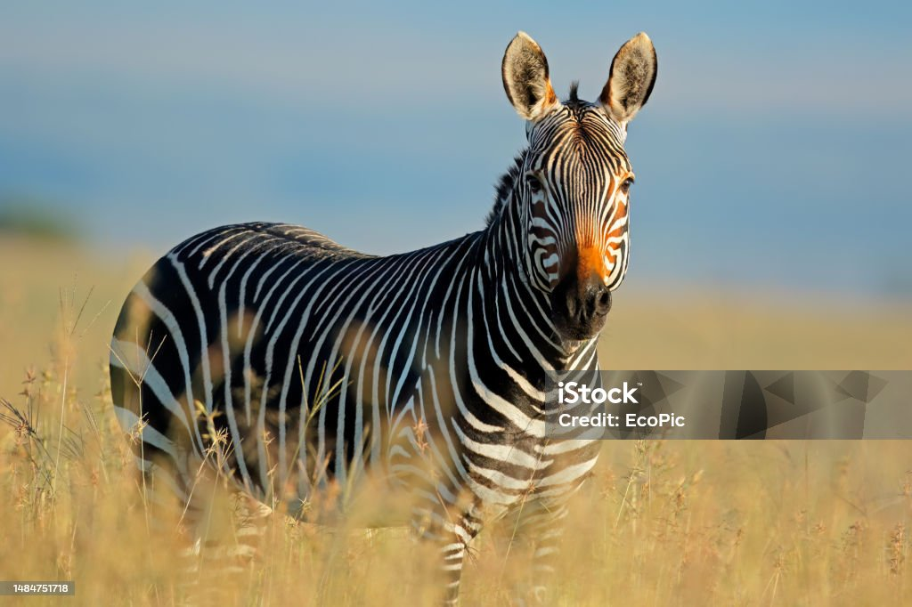

Zebra
Zebra – ssak z rodziny koniowatych charakteryzujący się obecnością białych pasów na czarnej sierści. Zwierzęta te należą do rodzaju koń. Do zebr zalicza się zwykle trzy gatunki z licznymi podgatunkami: zebra stepowa zebra równikowa zebra sawannowa zebra damarska zebra pręgonoga zebra równinna zebra kwagga